Тверь
Культура
Главные достопримечательности Твери
Императорский путевой дворец
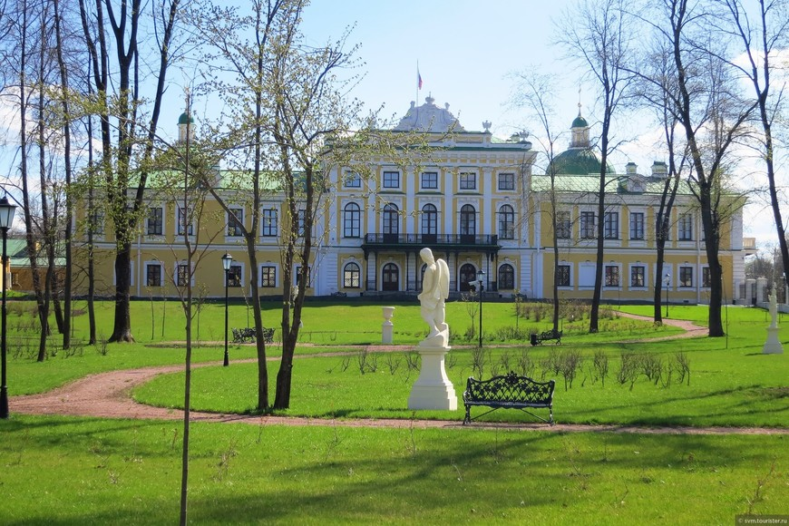
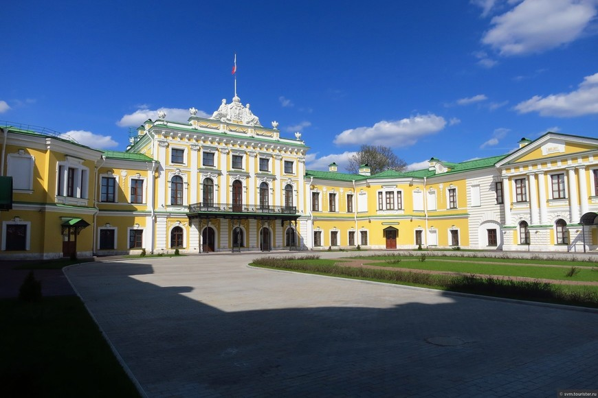
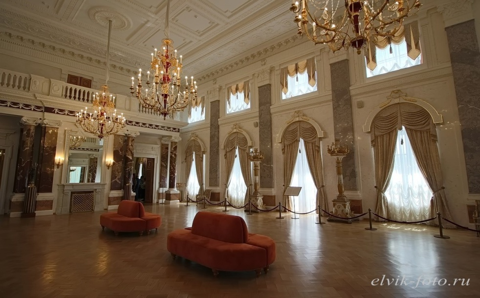
Императорский путевой дворец построен во второй половине XVIII века по проекту архитектора Петра Романович Никитина. Расположение выбрано не случайно, ведь в то время через Тверь проходил Петербургский тракт, связывающий северную столицу с Москвой. По долгу службы дорогой пользовались высшие государственные чины и сама императрица Екатерина II. Именно поэтому здесь было решено построить небольшой дворец, где можно с комфортом отдохнуть и переночевать после долгого пути. Отсюда и название дворца — путевой. Здание неоднократно перестраивалось и реконструировалось различными архитекторами, благодаря чему впитало в себя элементы нескольких архитектурных стилей, включая классицизм и барокко. Главный корпус дворца двухэтажный и выходит фасадом на берег реки Волги. К нему прилегает въездной двор и пристроено два выдвинутых флигеля. Внутреннее убранство дворца получилось особенно роскошным — изделия из стекла и фарфора, выполненные руками великих мастеров картины и скульптуры, дорогая мебель, мраморные колонны, огромные камины и другие детали интерьера.
Собор "Белая Троица"
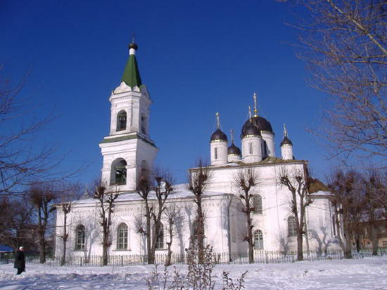
Собор "Белая Троица" или Троицкая церковь в Затьмачье — самое древнее из сохранившихся каменных зданий и самый старый из действующих храмов Твери. Храм выстроил в 1564 г. на свои средства Гаврила Андреевич Тушинский как вклад в Троице-Сергиеву лавру. Название «Белая Троица» собор получил, по-видимому, из-за цвета крыши или стен.
Казармы рождественской мануфактуры П.В.Берга
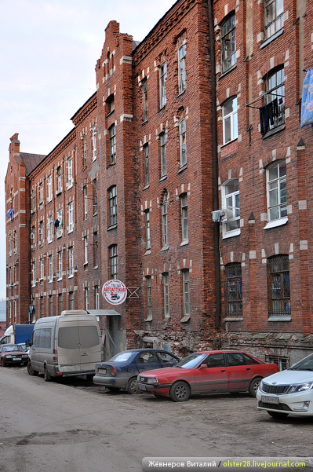
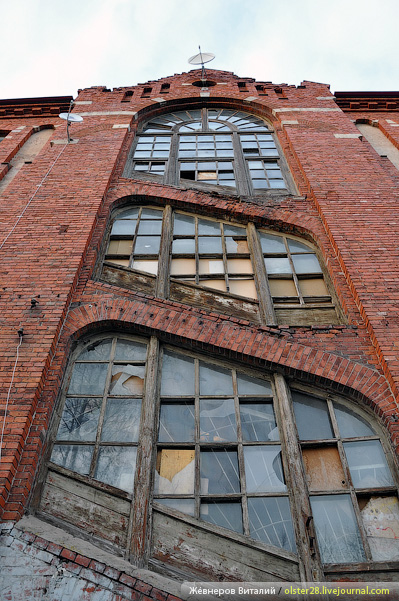
В 1878 Рождественскую мануфактуру приобрел уральский заводчик П.В.Берг. Жилые казармы и носят свое название по его фамилии. При Берге предприятие получило значительное развитие. Он закупал английские станки, фабрика была оснащена электричеством и водопроводом. Не забывал он и про рабочих - в 1880-х-1900-х гг. были построены школа, больница, родильный приют, холерное отделение, бани. При Берге по проекту архитектора Шмидта были выстроены три одинаковые большие пятиэтажные казармы (в 1901, 1904 и 1905-м годах соответственно). Комлпекс выполнен в формах романтизированного модерна.
Христорождественский монастырь

Впервые упомянут в грамоте, датированной 1514 годом. Распространено предание, что обитель возникла в начале XV века по благословению святителя и чудотворца Арсения, епископа Тверского.В Смутное время монастырь был разорён, с конца XVII века стал благоустраиваться, но до начала XIX века все постройки монастыря оставались деревянными. Главной святыней обители являлась чудотворная Тихвинская икона Богоматери, принесённая в монастырь в 1703 году.Монастырский ансамбль в стиле классицизма сложился в первой половине XIX века на средства графини Анны Иродионовны Чернышёвой. Предполагают, что проект этих зданий подготовил Н. А. Львов. Помогали жена, мать и сёстры императора Александра Павловича, посещавшие монастырь. Возведение нового собора в 1820 году по типичному для эпохи ампира проекту часто приписывают К. И. Росси, жившему в то время в Твери.
В 1920-е гг монастырь был упразднён, сохранившиеся здания использовались в качестве хозяйственных помещений, а после Великой Отечественной войны Рождественский собор служил спортзалом. В 1988 году верующим был возвращён Воскресенский собор, а сам монастырь стал возрождаться с 1 апреля 1999 года.
Христорождественский монастырь
Впервые упомянут в грамоте, датированной 1514 годом. Распространено предание, что обитель возникла в начале XV века по благословению святителя и чудотворца Арсения, епископа Тверского. В Смутное время монастырь был разорён, с конца XVII века стал благоустраиваться, но до начала XIX века все постройки монастыря оставались деревянными. Главной святыней обители являлась чудотворная Тихвинская икона Богоматери, принесённая в монастырь в 1703 году. Монастырский ансамбль в стиле классицизма сложился в первой половине XIX века на средства графини Анны Иродионовны Чернышёвой. Предполагают, что проект этих зданий подготовил Н. А. Львов. Помогали жена, мать и сёстры императора Александра Павловича, посещавшие монастырь. Возведение нового собора в 1820 году по типичному для эпохи ампира проекту часто приписывают К. И. Росси, жившему в то время в Твери. В 1920-е гг монастырь был упразднён, сохранившиеся здания использовались в качестве хозяйственных помещений, а после Великой Отечественной войны Рождественский собор служил спортзалом. В 1988 году верующим был возвращён Воскресенский собор, а сам монастырь стал возрождаться с 1 апреля 1999 года.
Храмы монастыря
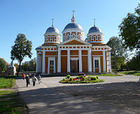
Собор Рождества Христова, 1820
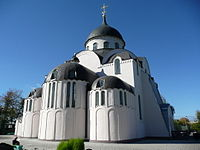
Собор Воскресения Христова, 1913, 1820
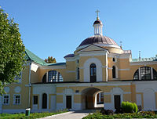
Надвратная Спасская церковь, с настоятельскими покоями, ризницей, трапезной, 1801-1805
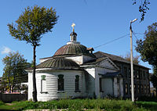
Больничная Троицкая церковь, 1830-1832
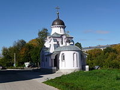
Церковь Царственных Страстотерпцев, 2006
Обелиск Победы
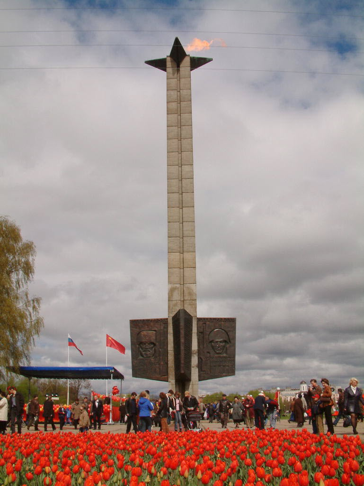
В декабре 1970 г. город праздновал 29-ю годовщину освобождения от немецких захватчиков. К этой дате был открыт монумент, ставший одним из символов Твери. В нижней части гранитного столпа, возвышающегося на 45,5 м, установлены чугунные плиты с барельефами, повествующими о ратном и трудовом подвиге Советских людей. Обелиск венчает чаша Вечного огня.
Памятник Афанасию Никитину
Именно из Твери в 1646 г. отправился в свой удивительный вояж «за три моря» знаменитый путешественник Афанасий Никитин, проложивший торговые пути в Персию, Индию, Турцию для российских купцов. В 1955 г. на набережной Волги, носящей имя этого замечательного человека, торжественно открыли памятник. Бронзовая фигура Афанасия Никитина, облаченного в купеческий кафтан, помещена на цилиндрический постамент, установленный в центре основания. Из гранитного объема выдается ростр древнерусской ладьи в виде конской головы.
Памятник князю Михаилу Тверскому
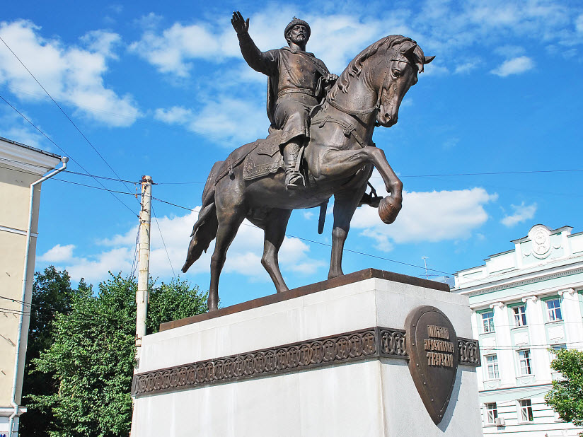
Князь Михаил Ярославич сыграл огромную роль в возвышении Твери. Именно при нем город стал центром могущественного княжества, бросившего вызов самой Москве. В 2008 г. неподалеку от центральной площади города был открыт памятник мудрому правителю и прекрасному полководцу, Бронзовая скульптура князя-всадника водружена на светло-серый гранитный постамент, опоясанный металлической лентой со славянским орнаментом.
Речной вокзал
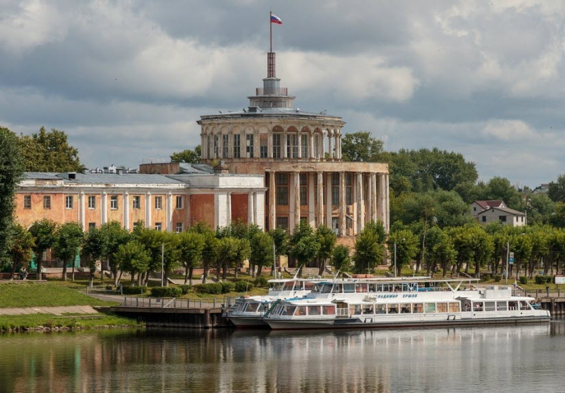
Одно из самых интересных зданий города было торжественно открыто в 1938 г. и вплоть до конца 80-х годов прошлого века являлось главной речной гаванью Твери. Оно сочетает в себе блистательность сталинского ампира с изяществом античного храма. Два яруса круглого в плане здания с двумя боковыми пилонами опоясывает элегантная колоннада. На кровле сооружен аккуратный бельведер, увенчанный высоким шпилем. К сожалению, здания больше не существует, в 2018 году оно рухнуло.
Стела «Город воинской славы»
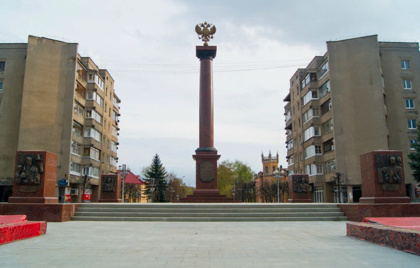
Осенью 2010 г. Тверь была удостоена высокого звания города воинской Славы, а через год появился памятник, посвященный этому знаменательному событию. На квадратный постамент между четырьмя пилонами была установленная 11-метровая дорическая колонна из полированного гранита. Ее венчает золоченый двуглавый орел. Постамент украшают картуши с гербом Твери и текстом Указа президента РФ. Пилоны содержат барельефы, посвященные освобождению города от фашистов, Отечественной войне 1812 г., Бортеневскому сражению, борьбе против литовско-польских интервентов.
Кинотеатр «Звезда»
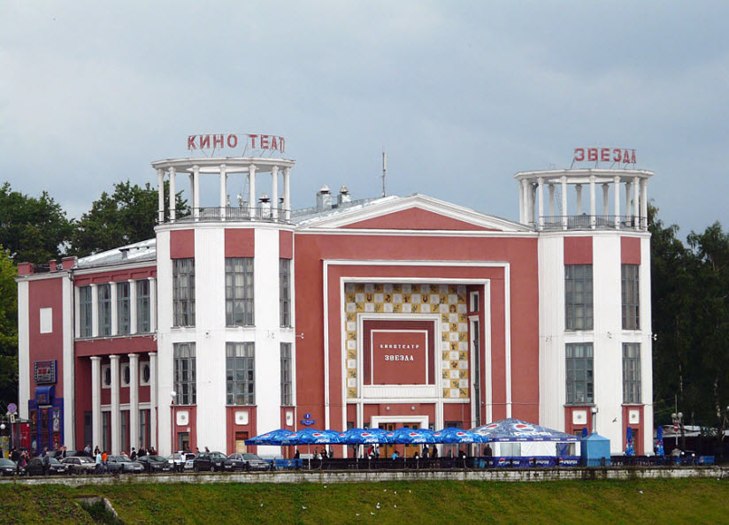
Считается, что здание, построено в 1937 г. в духе конструктивизма. Особняк с двумя круглыми башнями, увенчанными ротондами, сразу привлекает взгляд. Портал с треугольным фронтоном, расположенный со стороны центрального входа, добавляет особняку величественности, а красно-белая отделка фасада настраивает посетителей кинотеатра на позитив.
Памятник Ивану Андреевичу Крылову
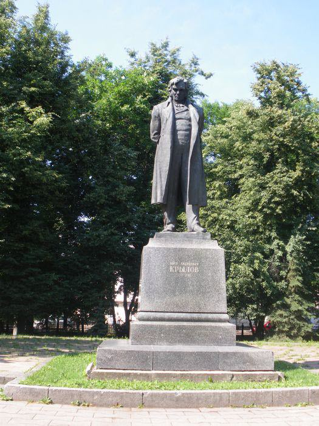
Знаменитый баснописец прожил в Твери около 10 лет. В 1959 г. ему был поставлен памятник в сквере его имени. Фигура, изображающая Крылова, возвышается на гранитном постаменте с памятной надписью. Завершают композицию пилоны с горельефами героев басен «Квартет», «Ворона и лисица», «Лев и волк», «Волк и журавль». Авторы памятника — скульпторы С. Д. Шапошников, Д. В. Горлов и архитектор Н. В. Донских.
Музей тверского быта
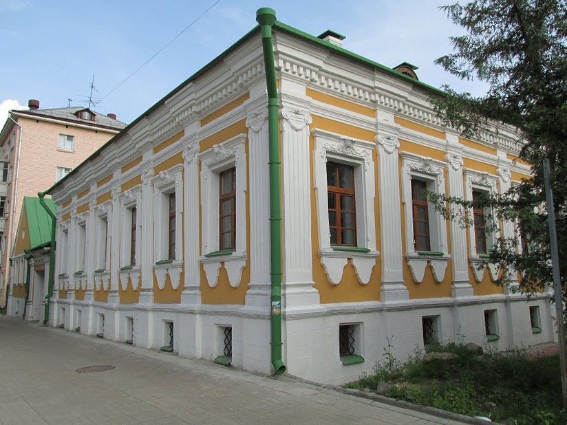
Двухэтажный барочный особняк с изящными флигелями конца XVIII – начала XIX века.
Музей М.Е.Салтыкова-Щедрина
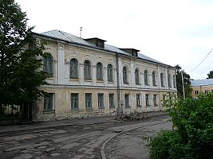
Открыт в 1976 году к 150-летнему юбилею писателя-сатирика по проекту художника Юрия Леонидовича Керцелли. Музей расположен в каменном доме, в котором Салтыков-Щедрин жил два года (с 1860 по 1862 год) во время работы в должности тверского вице-губернатора.
Гостиница (гостиная) Гальяни
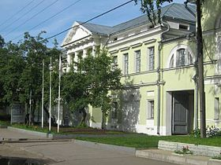
Главное здание гостиницы — двухэтажный дом с четырёхколонным портиком, сохранилось до наших дней. Гостиница построена обрусевшим итальянцем Павлом Дементьевичем Гальяни в конце XVIII века вместе с трактиром, рестораном и «залом для увеселений» и долгое время считалась лучшей в городе. В гостинице в 1826—1836 годах неоднократно останавливался А. С. Пушкин, в 1826 году он упомянул её в шутливом стихотворном послании к Соболевскому:
У Гальяни, иль Кальони,
Закажи себе в Твери
С пармазаном макарони
Да яишницу свари.
После смерти П. Д. Гальяни в 1831 году гостиницу содержала его вдова Шарлотта Ивановна. В 1859 году в гостинице жил Ф. М. Достоевский. В 1860-х годах гостиница продана купцу И. Д. Боброву. В конце XIX — начале XX века в здании размещалось Тверское отделение Петербургско-Тульского крестьянского поземельного банка и частная женская гимназия А. А. Римской-Корсаковой, с 1947 года — Тверское педагогическое училище, с 1993 года — Тверьуниверсалбанк, который провёл реконструкцию здания с восстановлением его первоначального облика.
Староволжский мост
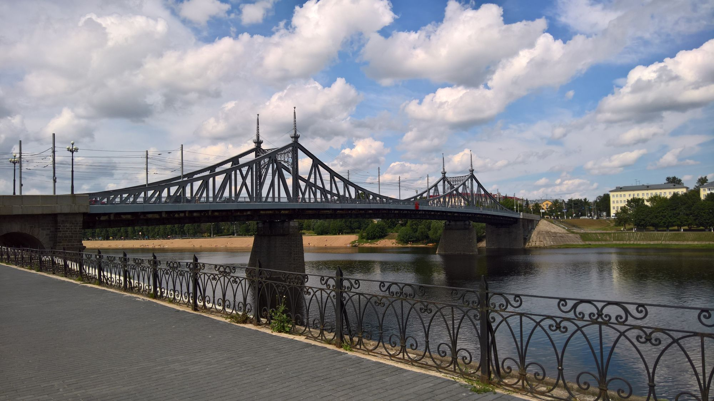
Сооружен в 1897—1900 гг. чешским инженером Л. И. Машеком по проекту, составленному в 1895 году в Санкт-Петербурге инженером-технологом В. Ф. Точинским. Открыт 8 сентября 1900 года при губернаторе Н.Д. Голицыне. В 1904 г. подъезды к мосту заасфальтированы. В декабре 1941 г. был взорван, но уже в начале 1942 г. было проведено временное восстановление, а в 1946—1947 гг. мост был восстановлен полностью
Старое здание вокзала
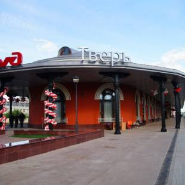
Здание вокзала было построено в 1845—1848 годах по типовому проекту вокзала первого класса (подобные были возведены в Малой Вишере, Бологом и Клину). Архитектор Р. А. Желязевич, руководитель инженер-подполковник П. А. Мейнгардта. Точная копия вокзала построена на станции Клин. На вокзале неоднократно бывали августейшие особы. 10 августа 1858 года и 25 мая 1866 года во время своего визита в Тверь — Александр III с Императрицей Марией Александровной, 18 октября 1893 года принцесса Ольденбургская принц Ольденбургский. Островной вокзал построен в русско-византийском стиле с элементами флорентийской архитектуры («окна в браманте»). Здание кирпичное, оштукатуренное, двухэтажное, со скругленными торцовыми фасадами, обведено галереей на чугунных колоннах для выхода пассажиров на перрон.
Екатерининский монастырь
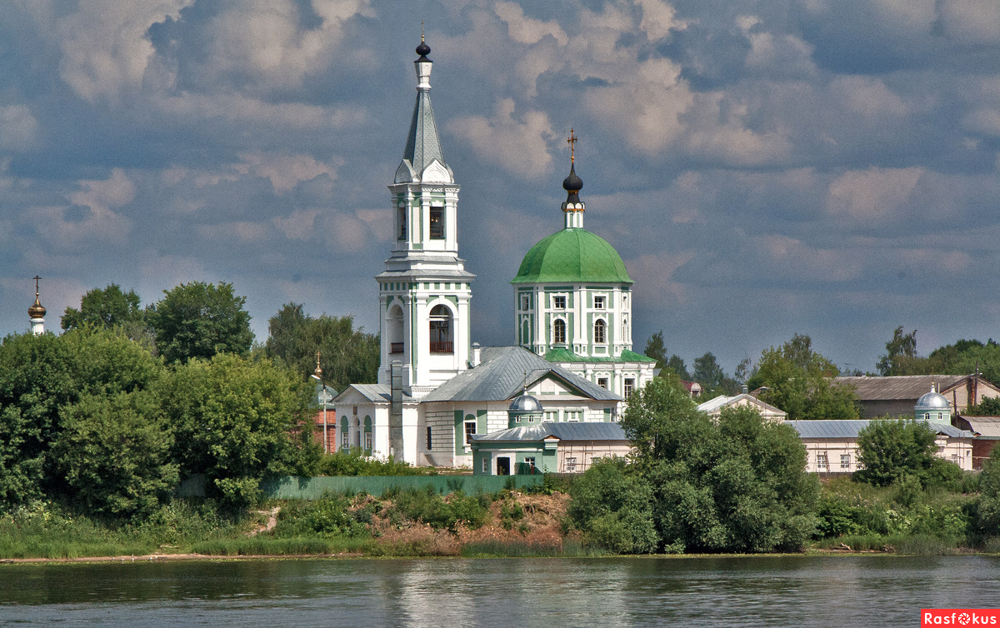
Первое здание было возведено в начале семнадцатого века. Постройка была выполнена из дерева, сгорела в 1732 году, однако тут же была восстановлена. Строительство каменного здания было закончено уже к 1786 году. Позднее здесь же появилась и ограда. В 1932 году на долгое время монастырь был закрыт. Во время Великой Отечественной войны все постройки в пределах ограждения были повреждены, а в 60-е годы разобрали и колокольню. Храм восстановили в 1989 году.
Соборная мечеть
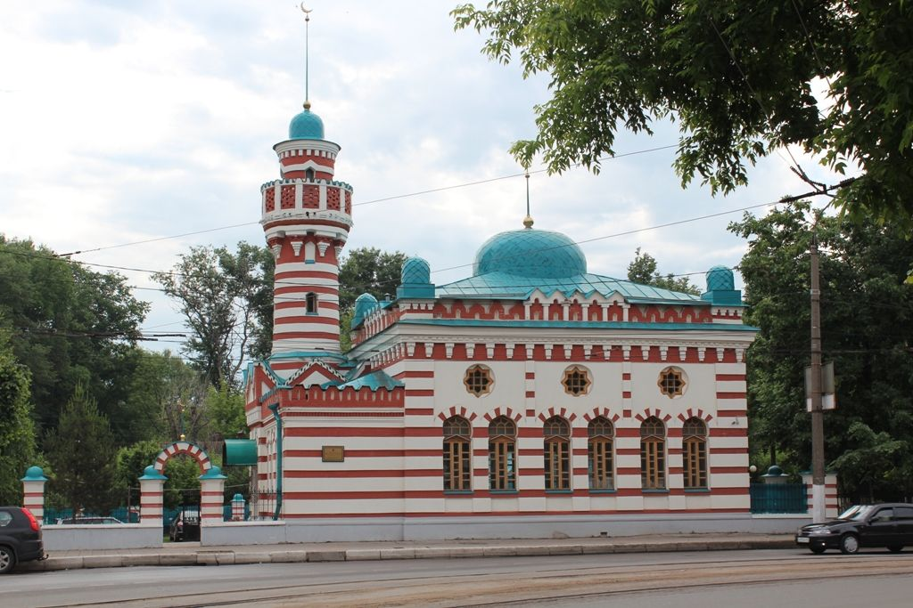
Решение о строительстве в Твери мечети было принято местными мусульманами в 1905 году. В целом по Твери в строительстве мечети испытывали необходимость около 300 человек. 3 октября1906 года строительство было полностью завершено. Мечеть была официально закрыта в июле 1935 года. В 1992 году здание мечети было возвращено мусульманской общине. Здание Тверской соборной мечети выполнено по образцовому проекту 1844 года в новомавританском стиле. Архитектор — Б. Г. Поляк. Оконные проемы с подковообразными арками, звездчатые 8-конечные окна, карниз с элементами местного зодчества. По углам крыши расположены маленькие купола, соединенные зубчатым гребешком. В северной части, в углу над входом, расположен минарет с куполом; на минарете - шпиль. Крыша украшена кирпичным узором в восточном стиле. Чередование горизонтальных полос в два цвета: белого и красного роднит здание с мечетями Владикавказа и Потсдама. В 1913 году вокруг Тверской соборной мечети появилась каменная ограда с металлическими стрельчатыми секциями, соединенными каменными столбами.